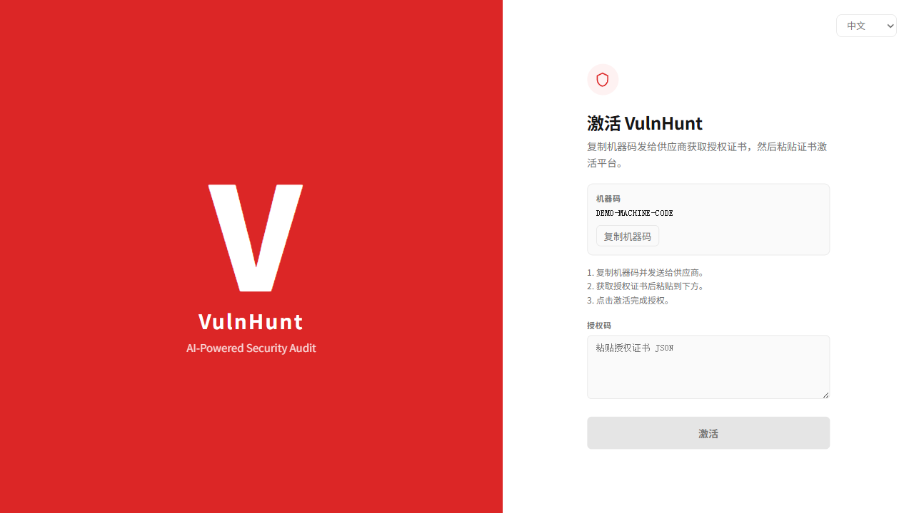
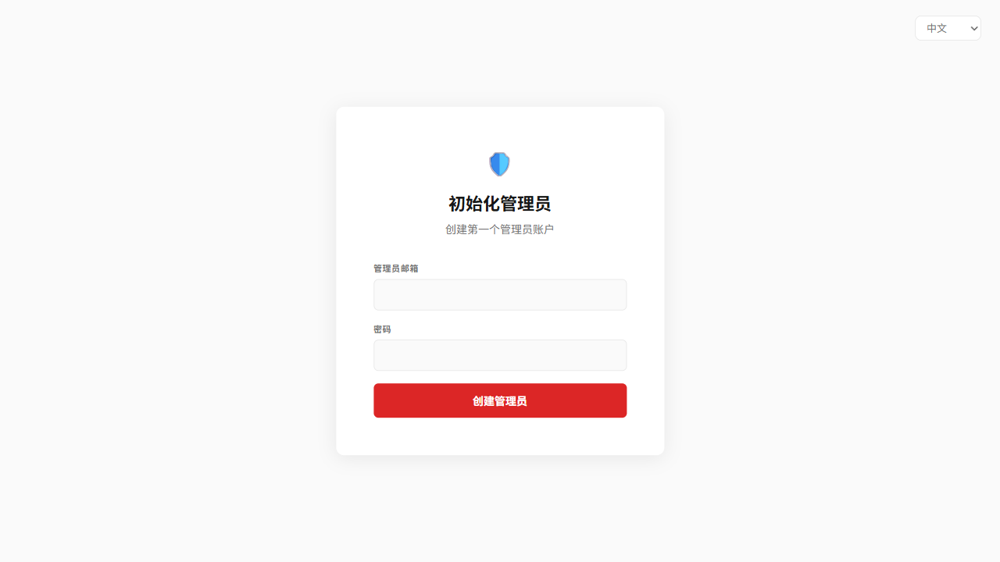
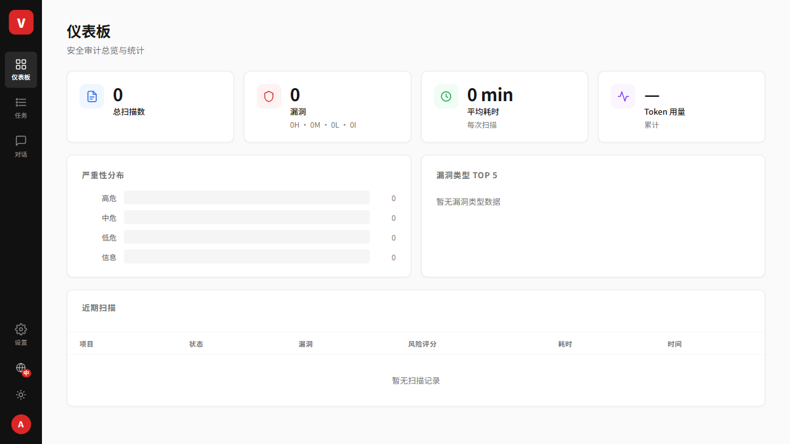
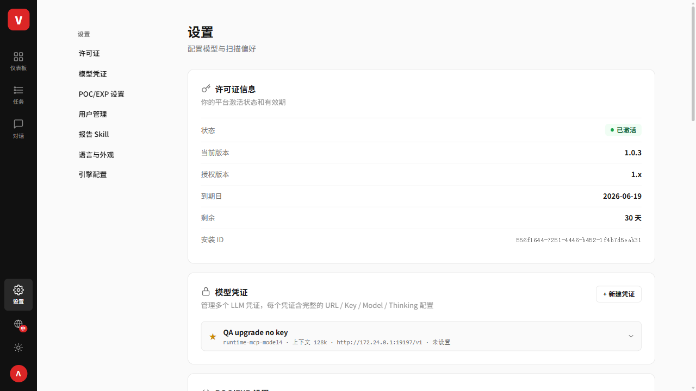
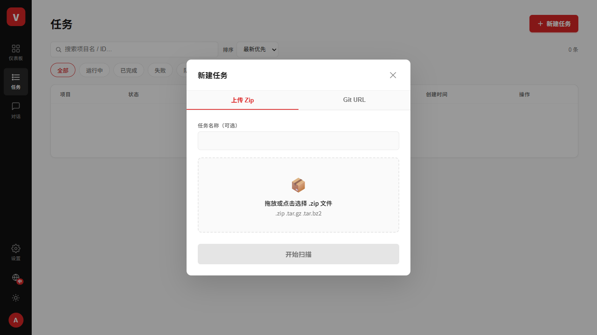

本文面向客户现场部署工程师。安装包为离线包，沿用一键 install.sh，安装后按本文完成 License 激活、管理员初始化、模型配置、创建扫描任务和查看结果。
docker-composedocker psdocker --version
docker compose version || docker-compose version
docker ps
free -h
df -hsha256sum -c vulnhunt-release-1.0.3.tar.gz.sha256
tar -xzf vulnhunt-release-1.0.3.tar.gz
cd vulnhunt-release-1.0.3离线包内包含 Docker 镜像、部署脚本、VERSION.json、校验文件、Markdown/HTML 文档和截图。
DATA_DIR=/opt/vulnhunt/data WEB_PORT=23000 ./install.sh
./doctor.sh普通用户部署可使用：
DATA_DIR=$HOME/vulnhunt-data WEB_PORT=23000 ./install.sh请备份整个 DATA_DIR，尤其是 $DATA_DIR/.secrets/vulnhunt-master.key。master key 丢失后，已保存的模型凭证无法解密。
健康检查通过后访问：
http://<服务器IP>:23000复制机器码，向供应商申请授权证书，粘贴 License 后点击“激活”。

首次激活后创建第一个管理员账号。后续访问使用管理员账号登录。

登录成功后进入仪表板，可查看扫描数、漏洞统计、Token 用量和近期扫描。

进入“设置 → 模型凭证”，填写模型名称、API Base URL、模型 ID、API Key（自托管模型如允许可留空），保存后执行连接/运行时验证。

进入“任务 → 新建任务”。可上传源码包或填写 Git URL，选择模型凭证后点击“开始扫描”。

任务详情页包含 Overview、Findings、Reports、Workspace、POC 等标签页。任务完成后可查看漏洞结果和报告入口。
./upgrade.sh
./doctor.sh
./uninstall.sh排障常用命令：
docker compose ps
docker compose logs -f service
docker compose logs -f web